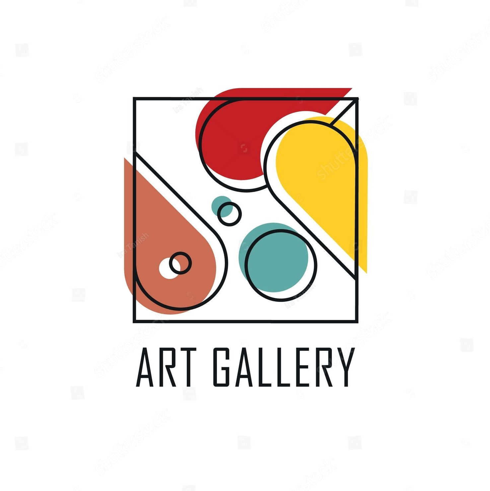

-

Vaciar carritoImagen Nombre Precio

ART GALLERY
las reproducciones más fieles de grandes pintores de todos los tiempos.
las reproducciones más fieles de grandes pintores de todos los tiempos.

pintor y escultor español, creador del cubismo, y continuó desarrollando sus diferentes facetas artísticas a un ritmo comparable a la celeridad de los cambios culturales y tecnológicos del siglo XX, cuyo arte dominó y revolucionó.

pintor y grabador neerlandés. La historia del arte lo considera uno de los mayores maestros barrocos de la pintura y el grabado,

pintor neerlandés, uno de los principales exponentes del postimpresionismo.Pintó unos 800 cuadros y realizó más de 1600 dibujos.
pintor italiano del período barroco, en su obra plasmaba una detenida observación anatómica con un uso dramático del claroscuro que llegaría a ser conocido como tenebrismo.
pintora mexicana, su obra gira temáticamente en torno a las vivencias de su vida personal por lo que en su obra se aprecian características surrealistas y expresionistas.

pintor francés impresionista, que en la segunda parte de su carrera se interesó por la pintura de cuerpos femeninos en paisajes, inspirados a menudo en pinturas clásicas renacentistas y barrocas.